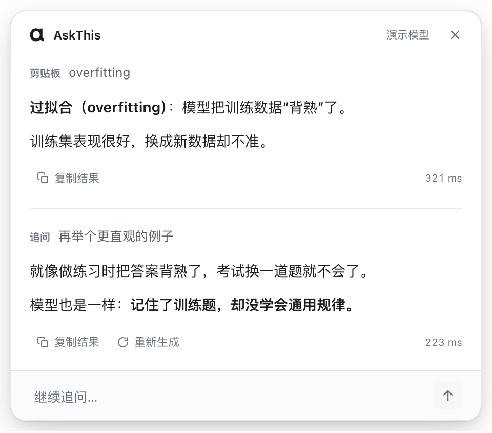

Ask where you are.
Keep your flow.
An unfamiliar word. A tricky paragraph. A line of code. One shortcut opens a small answer card—without opening a whole chat workspace.

A small question.
Not a whole detour.
For the middle of reading, writing and working with code. Sometimes you need an explanation, not another workspace.



Actual app screenshots using a local demo service, not online model performance tests. The clipboard source shown is an explicit mode; the default mode waits for input when nothing is selected. Chinese UI is shown; an English interface is available in Settings.
Reading
Explain a term or translate a sentence, without leaving the page behind.
Writing
Type or paste a draft, then choose a polish or summary prompt.
Code
Understand a small piece of logic without opening a bigger workspace.
Give your next question
a shortcut.
macOS
.DMG / v0.1.5Not sure which chip? Apple menu → About This Mac. M-series: Apple Silicon. Intel: Intel. macOS is the primary tested platform; not every chip or OS version is covered.
Windows
.EXE / v0.1.5Most Intel / AMD PCs use x64; Windows ARM devices use arm64. Earlier versions were hardware-tested; v0.1.5 interactions still await a Windows hardware retest.
Linux builds are provided but have not been hardware-tested. Use manual input / paste on Wayland. A build is not a guarantee that every interaction has been tested on that platform.
Files are hosted on GitHub Releases. If a v0.1.5 direct link is not ready, check the releases page. You do not need the Source code archives.
Connect the AI
you want to use.
AskThis does not include model credits. Bring your own API key, or an already running local model service.
Full beginner’s guide- 01
Install, then open Settings
Mac: open the .dmg, drag AskThis into Applications, then launch it there. Windows: run the installer for your architecture. A manual launch opens Settings; the app then lives in the menu bar / system tray.
macOS needs Accessibility permission to read selected text. Grant it in System Settings and restart AskThis. An update may require removing and re-adding the app.
Blocked by an installation warning?
The macOS release does not have Apple Developer ID signing or notarization. Verify that you downloaded it from this repository, then follow the system’s Open or Privacy & Security → Open Anyway flow. Do not disable system-wide security protections. For Windows SmartScreen, verify the source before choosing More info → Run anyway.
- 02
Connect a model. No AskThis account needed.
Go to Settings → Model services, choose a provider and save your own API key. Fetch its model list, select a model available to your account, and use Test connection to check the setup.
Use a cloud API
Connect OpenAI, Anthropic, DeepSeek, Gemini, OpenRouter, Kimi and others, or a compatible API. Create a key on the provider’s API platform. Cloud usage is billed separately by your provider. A web-chat subscription is not the same as API credit.
Use Ollama / LM Studio locally
Start your local model and its API server first, then configure the address, interface and model in AskThis. Local installation, model downloads and hardware resources are your responsibility. A local service does not incur cloud model API charges.
- 03
Type a question. Then try selecting text.
Clear any text selection and press Option+Shift+D (Mac) / Alt+Shift+D (Windows, Linux). Type the question below and press Enter.
Explain recursion in one sentence.
Next, select a word on a web page or in a document and use the same shortcut. Ask a follow-up after the answer. Copying keeps the card open; press Esc when you are done.
Your words.
Your destination.
- Direct requests
- Text goes directly to the model service you configure, not through an AskThis relay. Review a cloud provider’s data policy before using it, and do not send sensitive content.
- Local history
- History stays on your machine and can be disabled or cleared. API keys use encrypted system storage; if it is unavailable, keys stay in memory rather than silently falling back to plain text.
- No old clipboard queries
- The default mode queries selected text, or waits for manual input when there is no selection. A dedicated manual mode is also available. Direct clipboard queries require explicitly choosing clipboard mode or enabling clipboard fallback in automatic mode.
- No telemetry
- The app has no analytics, crash reporting or telemetry. This website also loads no analytics scripts and sets no tracking cookies. The source is available under the MIT license.
A few things
worth knowing.
A small card should come with clear boundaries—not hidden limitations.
Report an issueIs AskThis free? What do I pay for?
The app is free, MIT licensed and needs no AskThis account. Cloud models require your own API key; your provider bills you separately based on its prices and your usage. AskThis does not include model credits. You can also connect an already running Ollama / LM Studio local service.
I have a web-chat subscription. Do I still need an API key?
Web-chat memberships and APIs are usually separate products with separate billing. Check the provider’s API platform for a valid key, balance and model access. Do not use a chat website URL as an API endpoint, or put a login password in the API key field.
Why is the card blank when nothing is selected?
That is intentional. Type or paste your question, then press Enter. By default, AskThis does not automatically send old clipboard text just because you copied something earlier.
Can it read screenshots, images or scanned PDFs?
No. AskThis currently works with text and does not include OCR or screenshot recognition. Extract text from images, scans or unselectable interfaces using another tool, then paste it manually. Direct lookup in a PDF depends on selectable text and application support.
Why did selected-text lookup stop after a Mac update?
An update can invalidate Accessibility authorization. Check AskThis in System Settings → Privacy & Security → Accessibility. If toggling it does not help, remove the old entry, add AskThis from Applications again, grant permission and restart. Any Keychain access prompt must be confirmed by you in the system dialog.
The shortcut or request is not working. What should I check?
First confirm that AskThis is running. Check for shortcut conflicts in Settings → Shortcuts & interaction, or choose another combination. For a failed request, check the active service and model, API key, account balance and model access. If you use a proxy, make sure the system proxy is enabled.
If an application does not expose its selected text, copy it yourself and paste into the card. Selection capture depends on the application and system permissions; it does not work everywhere.
What about terminals, Windows and Linux?
Selection capture may simulate copying. On Windows / Linux, Ctrl+C can interrupt a terminal process, and restoring images or other non-text clipboard formats is not guaranteed. Use Manual input mode in terminals. Linux X11 capture depends on xdotool; Wayland does not support direct selection capture, and global shortcuts depend on the desktop environment.
macOS is the primary tested platform. Earlier Windows versions were tested for installation, launch and shortcuts; v0.1.5 interactions await a hardware retest. Linux has not been hardware-tested. Cross-platform builds are not the same as hardware verification.
Can I change the model, prompt or interface language?
Yes. Use multiple providers or a custom compatible API, subject to your account’s available models. Built-in prompts cover quick lookup, translation, code explanations, summaries and polishing, and can be customized. Settings also offers Chinese / English interfaces, light / dark themes and a configurable shortcut.
Fewer detours. A little more clarity.
Download AskThis